Quick Start
Six short pages that take you from opening uFTi to your first person, with its source and a copy.
This takes about ten minutes. Each page has a few steps. Do them in order.
Understanding family tree information
Oughtibridge Ltd
© 2026 Oughtibridge Ltd
This publication is available at https://docs.ufti.com/iphone/Alpha-2/
Six short pages that take you from opening uFTi to your first person, with its source and a copy.
This takes about ten minutes. Each page has a few steps. Do them in order.
Make your own workspace and add yourself, or someone you know well.
The app first opens on a sample tree, the Brontë family of Haworth. Make a workspace of your own for your family.
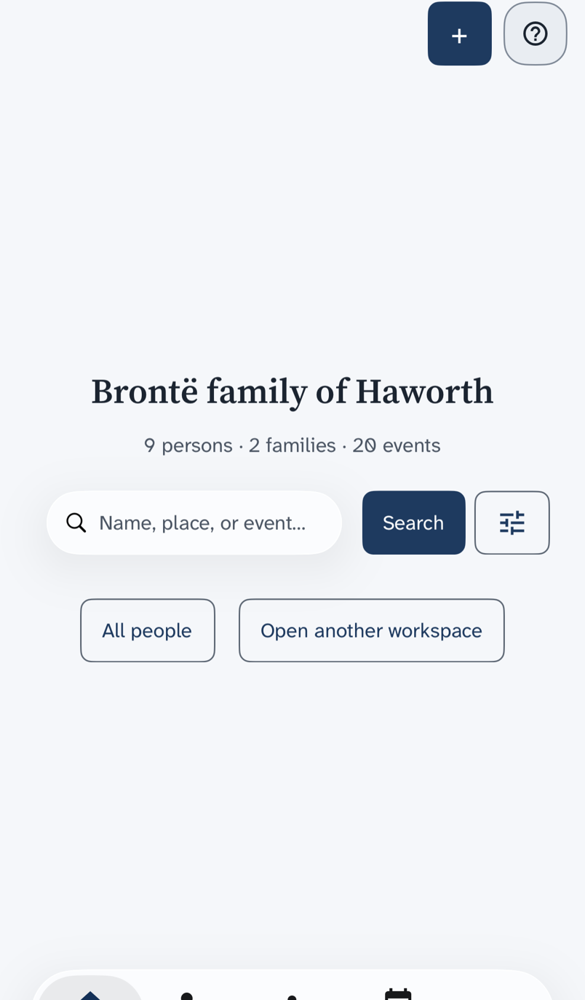
That is your first person. uFTi saves your work as you go.
Next: Look around.
See what the five places in the bar do for the person you added.
Add a person first.
The bar along the bottom of the screen shows the main places. Most of them show the person you are looking at.
To go back one screen, choose the back arrow.
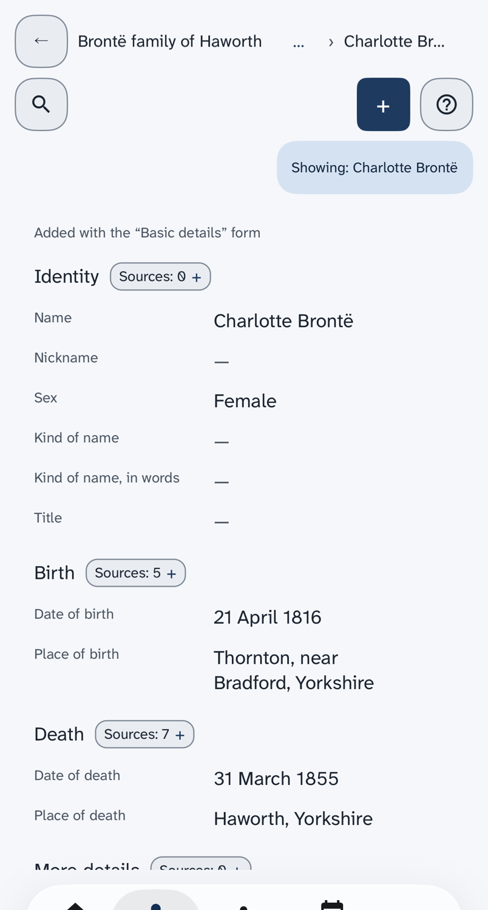
Next: Say where you found it.
Add a source to a fact, so you always know why you believe it.
Open the page of a person who has a birth date.
To find a person, type their name in the search box and choose Search. Then choose the card with their name.
The fact now has a source. Later, when two records disagree, this is how you will know what to believe.
Next: Keep it safe.
Save a copy of your tree as a file, and keep it somewhere else too.
You now have a copy. Make a new one after you add a lot. Keep one off your device too.
Next: What next.
You have a tree, a person, a fact with its source and a copy, so choose where to go from here.
Well done. What do you want to do now?
The five ideas behind uFTi, in two minutes.
You can have more than one. Each shows as a card on the Workspaces screen. Make a new workspace for each tree.
Add a person for each relative. A family joins a couple. uFTi draws a tree from your families. Choose Family to see it.
A fact is something you record, such as a birth with its date. A source is where you found it. It can be a certificate, a census page, or what someone told you. A small chip beside each heading on a person's page counts the sources. Choose the chip to add one. Then you will always know why you believe a fact.
uFTi saves your work as you go. To keep a copy, choose Save as… on your workspace's card. Keep the file somewhere else too. Do it again after a big session.
Look in this guide when you are stuck. Use its search box, and type the words you would say. Practise in a workspace you make for the purpose.
Find people, add people and families, read their events and sources, and write notes.
This chapter is for everything you do once a tree is open. It starts with a picture of every screen. Then it shows how to find a person, how to read what the app knows about them, and how to add more. Each page has a few steps and a picture of the result.
The pictures use one small tree: the family of Patrick Brontë of Haworth, a village in Yorkshire. You can build it yourself, a little at a time, as you read.
What each place in the bar along the bottom shows, what the top of every screen holds, and what the More list opens.
The bar stays at the bottom of every screen. It has five places. Some show your whole tree. Others show one person, the person named in the chip that starts with Showing.
| Place | What it shows | Needs a person |
|---|---|---|
| Home | The tree that is open, with a search box and the people you opened last. | No |
| Person | The page of one person. | Yes |
| Family tree | A drawing of the person with parents, partners and children. | Yes |
| Events | The things that happened in that person's life. | Yes |
| More | A list of other places, such as your trees, your notes and the colours. | Some |
Select a personor
No person selected, it needs a person first. Search for someone, then open them. A page says no person is selected shows how.
A back arrow takes you back one screen. Beside it, the name of the tree and the path to the screen you are on show, such as More then Preferences. Below them are three buttons.
On Home the search button is not shown, because Home has a search box of its own.
The chip that starts with Showing names the person the bar is showing. Every field of a form also has a small help button of its own.
This is the first screen. It names the tree that is open and counts its people, families and events. It has a search box, two buttons and, once you have opened people, the names you can go back to. Find a person shows how to search.
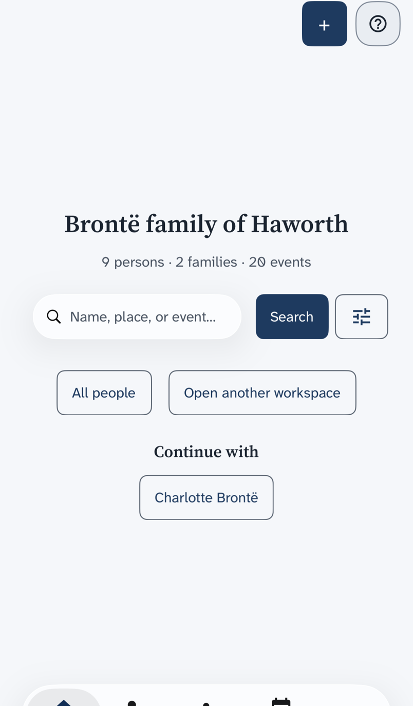
Change a person shows the page of a person. See a family tree explains the tree. See the events of a person explains the list of events.
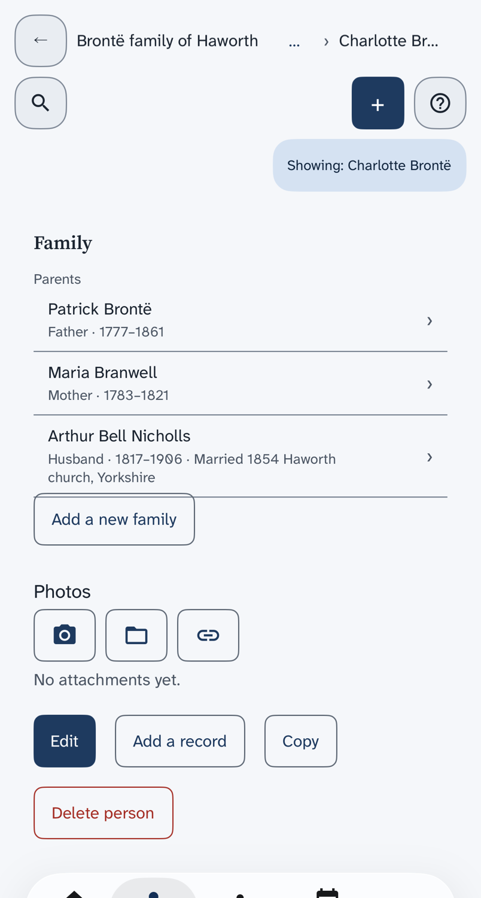
Choose More to see eight places. Each one opens a screen of its own.
The lists for the whole tree are empty until you add something with +.
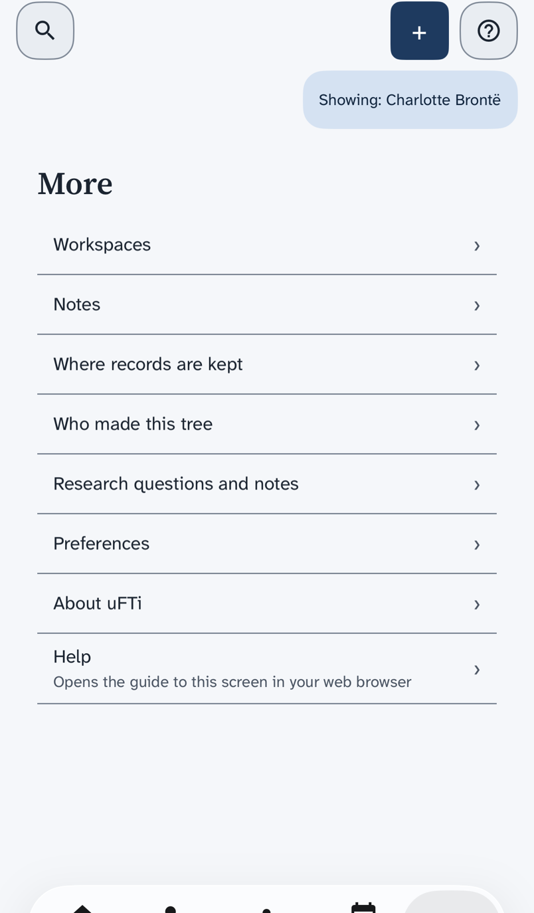
Choose Workspaces in the More list. Each card is one family tree. It tells you how many people, families and events the tree holds, and which tree is Active.
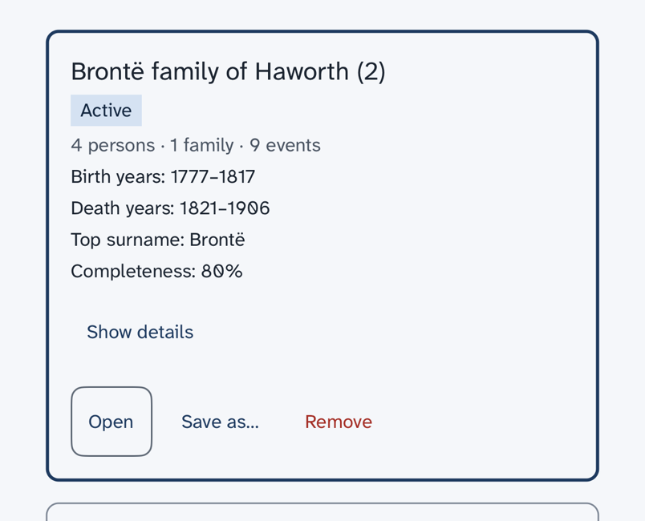
Search your tree by a name, a place or an event, or list everyone, then open the person you want.
The search also looks at the other names a person has, so a pen name finds the person too. It searches the tree that is open.
Now Family tree, Events and Notes all show that person.
Three buttons above the cards show everything, only the people, or only the events. To see everyone without a search, choose All people on Home. The list gives each person's name, years, sources and events.
To narrow the results, choose Refine by. Tick Dates, Sex, Place or Event type to add a filter. Tick Approximate (sound-alike) matches to also find names that sound alike. Choose Clear filters to start again.
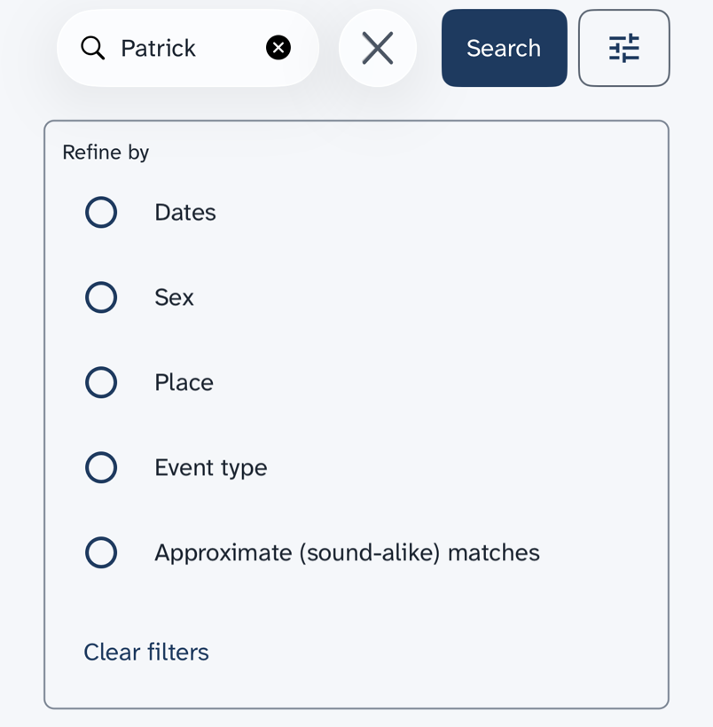
Next: See a family tree.
Draw the parents, partners and children of one person.
Open a person first. Find a person shows how.
Each box gives a name, how the person is related, and their years. A small mark shows how many events and notes the person has. A round mark between two partners shows the year of their marriage. A button such as +5 siblings
means more brothers and sisters are not drawn.
In words: the tree of Charlotte Brontë shows her parents at the top, Patrick Brontë and Maria Branwell, joined by a mark for 1812. Charlotte is below them in a box with a dark edge. Beside her is her husband, Arthur Bell Nicholls, joined by a mark for 1854.
The same tree is the pedigree in older manuals.
Next: See the events of a person.
List what happened in a person's life, such as birth, marriage and death, in date order, and open any one.
Open a person first. Find a person shows how.
A marriage opens the page of the family. To add an event, choose Add event under the list. Add an event shows how.
How uFTi records a date, from one you know in full to one you only know in part.
Most dates are simple. Type the day, the month and the year, such as 15 March 1900. You can write the month in words or choose it from the list.
A line under the date starts with Reads as
. It shows how uFTi has understood the date. Look at it each time. If it is not what you meant, change the date.
At first the date editor shows only the day, the month and the year. If the record gives less, turn on Not sure of the date?. The editor then asks How much do you know?. Choose The year, The month and year or The whole date, to match what the record gives you.
Do not make up a day or a month to fill the gap. A newspaper may say that a book came out in December 1847. Then choose the month and the year, and stop there.
With Not sure of the date? on, Kind of date says how sure you are. You can say that a date is about right, worked out by you, or a limit. You can also give a span of time. The kinds of date lists each choice, with an example.
Choose Edit as text to type the whole date in one box, such as about 1900 or between 1850 and 1860. Some things you might type are kept as typed and not read as a date. Typing a date says which.
A date from long ago may need more care. Britain changed its calendar in 1752. Before that, the year there began in March. uFTi can keep a date in the calendar of the record.
For example, the diarist Abraham De la Pryme gives his birthday as 15 January 1671. England used the Julian calendar then. To keep the date in that calendar, type Julian 15 January 1671. The Reads as
line then shows 15 January 1671 (Julian)
.
Calendars and old dates explains how this works. A worked case: a birth in January and A worked case: two calendars in one life follow his dates through real cases.
uFTi uses dates to order the events of a person. Dates in lists and in order shows where you can enter a date, how dates are shown and how uncertain dates are ordered.
Seven ways to say how sure you are of a date, each with an example.
A date in a family tree is often not exact. The kind of date lets the tree say so. Choose Not sure of the date? to see the kinds under Kind of date. Pick the one that matches your evidence, not the one that sounds neatest.
| Kind | Use it when | Example | Type it as |
|---|---|---|---|
| On | You know the date. | A copy of a parish register says that Emily Brontë was buried on 22 December 1848. | 22 December 1848 |
| About | A record or a story gives a date that is close, but not exact. | A family story says that a great-uncle left home about 1850. | about 1850 |
| Estimated | You worked the date out yourself, for example from an age. | A census says that a woman was 30 in 1851. You work out that she was born about 1821. | estimated 1821 |
| Before | It happened on or before this date. | Branwell Brontë had drawing lessons before 1835. | before 1835 |
| After | It happened on or after this date. | Branwell worked as a portrait painter after his visit to London in 1835. | after 1835 |
| Between two dates | You know the earliest and the latest date it could have been. | A memorial tablet says that Maria Brontë died on 6 May 1825, in the 12th year of her age. So she was born between 7 May 1813 and 6 May 1814. | between 7 May 1813 and 6 May 1814 |
| From a date to a date | Something went on for a while, such as a job or a stay. | Patrick Brontë was curate of Thornton from 1815 to 1820. | from 1815 to 1820 |
Use Before and After for a limit that a record gives you. A baptism can be a limit on a birth, because a child is baptised after being born. Use Estimated only for a date that you worked out.
Do not pick one date and drop the other. Record each date with the source that gives it. Then your tree shows the disagreement, and a later record may settle it.
What uFTi reads when you type a date in one box, and what it keeps exactly as you typed it.
Choose Edit as text to type a whole date. Write it in words, with the day first, then the month, then the year. The box shows an example. Capital letters do not matter. You can write a month in full or with its first three letters.
| You type | It means |
|---|---|
| 15 March 1900 or 15 Mar 1900 | A whole date. |
| March 1900 | A month and a year. |
| 1900 | A year. |
| about 1900, estimated 1900 or calculated 1900 | A date that is close, or that you worked out. |
| before 1900 or after 1900 | A limit. |
| between 1850 and 1860 | The earliest and the latest date it could be. |
| from 1850 to 1860 | Something that lasted for a while. |
| 44 BC | A year before the common era. BCE works too. |
| Julian 14 February 1750 | A date in the Julian calendar. Name the calendar first. |
| 12 February 1731/32 | A date with a dual year (Calendars and old dates). |
| 1700 (Easter) | The year 1700, with the word Easter kept beside it. |
These are not read as dates. uFTi keeps them exactly as you typed them. It does not use them to order your events.
When uFTi cannot read a date, it does not stop you, and it does not warn you. The line under the box only repeats what you typed, such as Reads as Easter 1700
. So read that line each time. For a date that uFTi has understood, the line shows it in words, such as Reads as 15 March 1900
.
A date that cannot be read stays in the box as text. Edit as text stays on for it, because the day, month and year pickers cannot show it.
The four calendars uFTi keeps, and what you need to know when a record is from before 1752.
For a date in the last two hundred years or so, you can ignore this page. Every date is in the calendar that you use today, and uFTi assumes it. This page is for a researcher who meets an older date.
uFTi keeps a date in Gregorian, Julian, Hebrew or French Republican. Gregorian, the one you use today, is the default. In the date editor, turn on Not sure of the date?, then choose More: other calendars. Or type the calendar's name before the date, such as Julian 14 February 1750.
Then uFTi names the calendar in the date, as in 14 February 1750 (Julian)
. Some forms fix the calendar. A census form always uses Gregorian, and does not offer the list.
uFTi does not change a date from one calendar to another. It keeps the date as you entered it. Dates are ordered by the year in their own calendar.
Britain and its colonies used the Julian calendar until September 1752. In that month, Wednesday 2 September was followed by Thursday 14 September. Many Catholic countries had changed in 1582, and other countries changed at other times. So the place matters as well as the year.
uFTi does not know about the change. It takes 3 September 1752 as an ordinary date, and does not warn you, though that day never happened in Britain. Check dates of this time yourself.
The two calendars differed by ten days in the 1600s and by eleven days in the 1700s. A record from the time gives the day as it was then. Naming the calendar tells the next reader which kind of date it is.
It was really two changes. The year 1751 began on 25 March and ended on 31 December. Then eleven days were left out in September 1752. A record made near these changes can look wrong, by days or a year, when it is right.
This part is about England, Wales and Ireland, and the British colonies. Before 1752, the year there began on 25 March, not on 1 January. A day in February was still in the old year. Writers marked this with a dual year, such as 1731/32. It means 1731 by the old rule and 1732 by ours.
Scotland began its year on 1 January from 1600. Other countries changed the start of the year at other times. A dual year belongs to a British record from 1 January to 24 March, up to 1751. Check the place of your record.
Type a dual year, such as 12 February 1731/32. uFTi shows the date as you wrote it. The date pickers cannot hold a dual year, so it is always typed. uFTi orders it by the first year, 1731. A worked case: a birth in January shows why this matters.
Hebrew dates appear in Jewish records. France used the French Republican calendar from 1793 until the end of 1805. For these two calendars, uFTi checks only that the day is possible. It does not work out the other calendar for you.
How a year that began in March can change a birth year, shown with a diarist born in 1671.
This case shows why the old year matters. Read Calendars and old dates first.
Abraham De la Pryme was a diarist in Yorkshire. In his diary, he says he was born on 15 January 1671. His own list of the family, at the front of the diary, says the same.
The same list says that his parents married on 3 April 1670. It also says that his brother Peter was born on 29 April 1672. The printed edition of 1870 is the source for all of this.
In England at that time, the year began on 25 March. If Abraham used that rule, then January 1671 was January 1672 by our count. Then Peter would have been born about three months later. That cannot be right.
So Abraham probably began his year on 1 January. His parents' wedding fits too: a birth in January 1671 comes about nine months after April 1670. His birth year is then 1671 in either count.
In England, a writer who gave a date from January to March might use either year. Someone adding one to a January year, because of the old rule, would get 1672. The family's own dates suggest that this would be wrong here.
The same early months appear in two ways in the edition. The preface says that Abraham took his degree in January 1693. A footnote prints the year of another man's degree, at the same college, as 1692-3. The two forms name one year.
His own letters, as printed, show the other way. One is dated 2 February 1701-2, and another 25 January 1703-4. Each date comes before 25 March, so each year has two numbers. The same person can write a year differently in different records. Check each one.
How far apart the Julian and Gregorian calendars were in the life of a diarist who lived from 1671 to 1704.
Abraham De la Pryme was a diarist in Yorkshire. England used the Julian calendar all through his life, so his dates are Julian. This case shows how far they were from the Gregorian calendar. Read Calendars and old dates first.
The Gregorian calendar was ten days ahead when Abraham was born. The gap grew while he lived. The year 1700 had a 29 February in the Julian calendar, but not in the Gregorian calendar. So, from March 1700, the gap was eleven days.
| What happened | Julian, as written then | Gregorian | The gap |
|---|---|---|---|
| His birth | 15 January 1671 | 25 January 1671 | 10 days |
| A letter from Hull | 20 November 1699 | 30 November 1699 | 10 days |
| Another letter from Hull | 18 September 1700 | 29 September 1700 | 11 days |
| His death | 12 June 1704 | 23 June 1704 | 11 days |
uFTi does not work out the other calendar for you. We worked out this table by hand.
A friend wrote in his own diary that Abraham died on a Monday, the 12th of the month. The preface of the printed diary gives this, for June 1704. In the Julian calendar, 12 June 1704 was a Monday. In the Gregorian calendar, it was a Thursday. So the friend's date is a Julian one.
When a record names the day of the week, you can test its date in this way.
Abraham died in 1704, so his dates stop before the change of 1752. Calendars and old dates explains that change.
Keep the date as the record gives it. If you want to show which calendar it is, type its name first, such as Julian 12 June 1704.
Where you can enter a date, how uFTi shows it, how it puts dates in order and what it checks.
A source has no date of its own. Give the date of a record to the event it is about.
A date is written in words, in the language of the app. It does not follow the date settings of your device. You will see 15 March 1900
, March 1900
and 1900
. An uncertain date reads about 1900
, before 1900
, after 1900
, between 1850 and 1860
or from 1850 to 1860
. A year before the common era reads 44 BC
. A life span in a list reads 1816–1855
.
uFTi orders by the year of the first date, as if that date were exact. It does not use the month or the day for an uncertain date.
| Date | It is ordered as |
|---|---|
| about 1850 | The year 1850. |
| before 1900 and after 1900 | The year 1900, both. Neither goes before or after it. |
| between 1850 and 1860 | The year 1850. |
| from 1850 to 1860 | Its start, 1850. |
| A year before the common era | Before the year 1. |
| A date kept as typed | It is not ordered by year, because uFTi reads no year in it. |
On the page of a person, the events are in order of year, and then by the kind of event. The month and the day are not used. Events with no date come last. The family tree view uses the year, then the month, then the day, of the first date.
While you enter a date, uFTi checks that the day exists in that month and year of the calendar. It does not check that the events of one person are in a sensible order. Check yourself that a baptism comes after a birth, and a burial after a death.
Some forms warn you about a date but never stop you. A census form expects a Gregorian date on the day of the census.
uFTi has no limit on the earliest year. Type BC or BCE after the year, such as 44 BC. The date pickers cannot enter these years, so you always type them.
How uFTi records a place, and how it helps you spell a place the same way each time.
In uFTi, a place is the words you type. There is no map, and no list of places to pick from. So type the place as your record gives it, such as a town or a parish.
You meet a place box in these forms:
They all work in the same way.
An empty box says Start typing a place…
. As you type, uFTi shows the places in this tree that match. It shows up to eight, underneath the box. Choose one to use it. Or keep typing a new place.
The places offered are the ones you have already typed in this tree. When you choose one, the place is spelled exactly as before. That keeps one place from turning into two.
When a record spells a place in a different way, type it as the record does. Then the tree shows what the record said.
What uFTi does when you save a person whose name is already in the tree, and how to choose.
A person has Given name(s) and Surname. Families use the same names again and again. So two people in your tree may share a name, and a name you type may belong to someone you have already added.
When you save a form that would make a person with a name that is already in the tree, uFTi stops and asks you first. A box opens. Its title says that the name is already in this tree. If more than one person has the name, it says how many.
Under the title, there is one button for each person who has that name.
If you are not sure, look at the other person first. Do not join two people unless your records say they are one.
See which books and records back up a birth, a death or another fact, add a source to it, and say how reliable it is.
Each fact on a person's page has a small chip that counts its sources. A chip that says Sources: 0
means nothing backs that fact up yet. Every count of sources uses the same words, so you see them on a person's card in the results of a search too.
The choices for how reliable a source is start with Not stated
. They run from unreliable or worked out up to direct and primary evidence. They rate how good the evidence is. They do not say that the fact is true. A copy of a record, such as a transcription, is second-hand evidence.
A fact can have many sources. In the sample tree, the birth of Charlotte Brontë has five books, each with its author and a line for its quality.
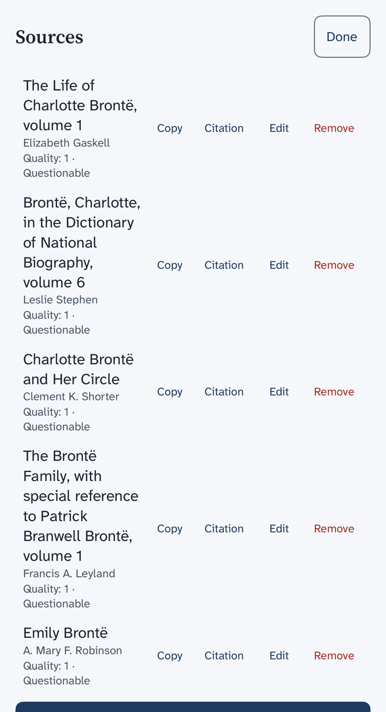
On a birth or a death, Compare records that disagree shows on the sheet, however many sources the fact has. It opens a page that lists what each source says about the place and how good each source is. Use it when two records give different answers.
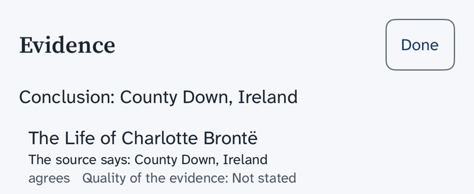
Next: Add another person.
Add a person to a tree that already has someone in it.
The first person comes with a new tree. After that, you add people with +.
If the name is already in the tree, a box asks first. It has a button for the person who is there, written Use with their name and years, and a button that starts Add a new person called. Choose Use if you meant the same person. Choose the other button if two people share a name.
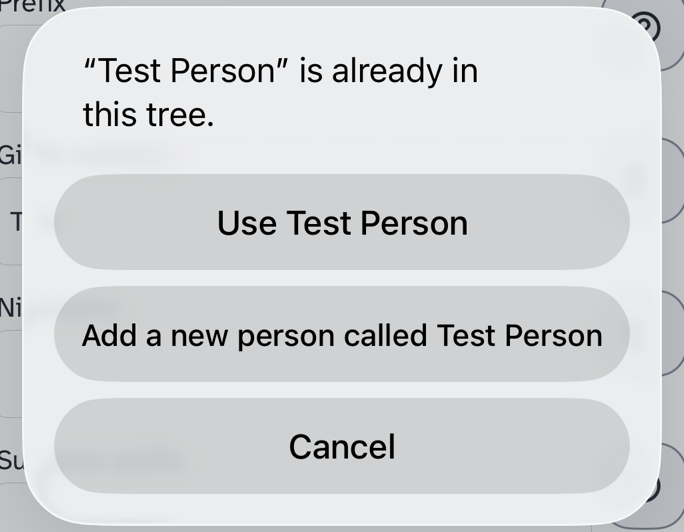
To see everyone in the tree, choose All people on Home.
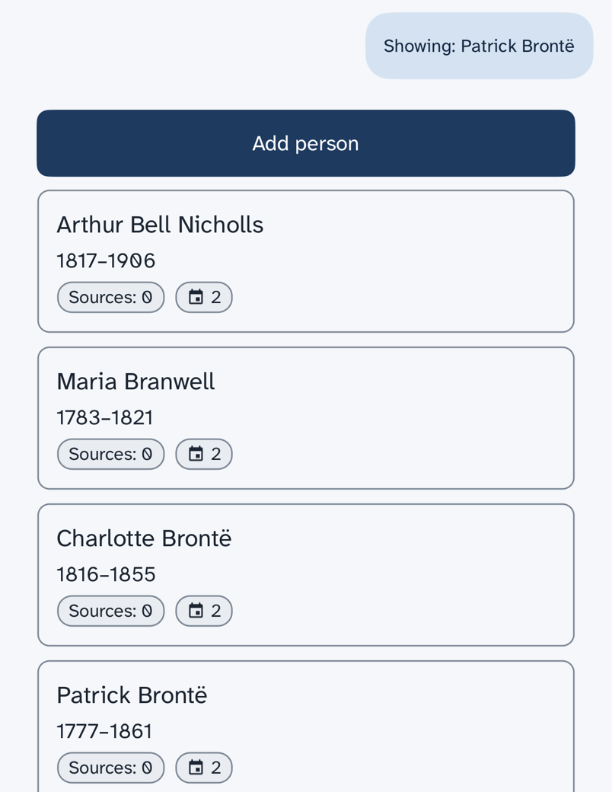
To open the new person, Find a person.
The sheet ends with More forms. Choose it to see the forms that do not fit this person. Each one has a line under it that says why. For example, This form covers 1891, and going by the dates in the tree, nobody here was alive then.
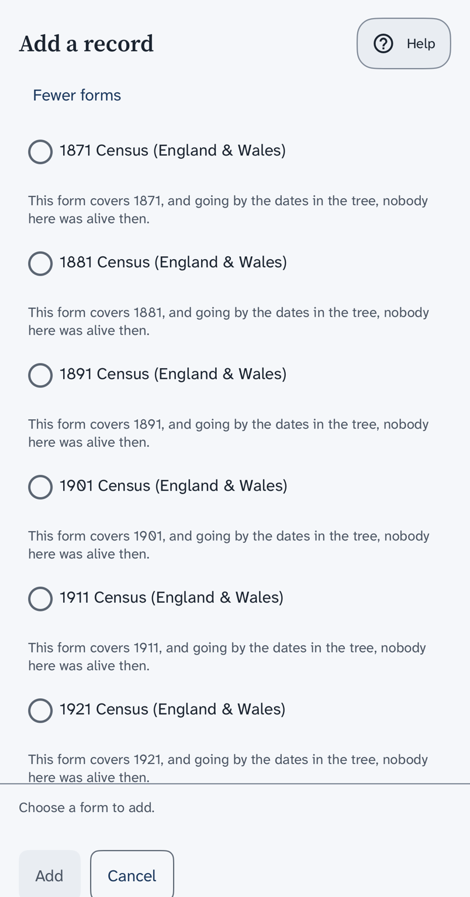
Next: Add a family with children.
Correct a name, a date or a place on a person's page, add another name, or remove a person.
Open the person first. Find a person shows how.
The button Delete person sits below Edit. It removes the person, and takes them out of any family or event. A box names the person and asks you to check. You cannot undo it, so check before you choose Delete.
Join two partners, record their marriage and add their children, from people who are already in your tree.
Add the partners and the children first. Add another person shows how.
The page of the family lists the partners, the marriage and the children. Choose View family tree to see the family drawn out.
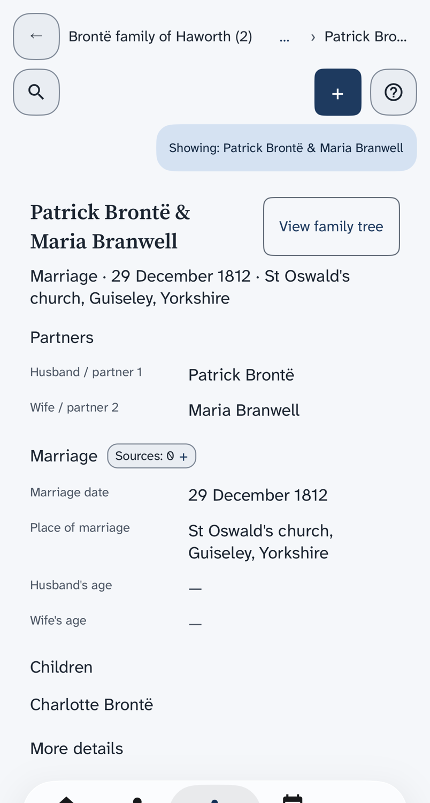
To change a family later, choose Edit on its page. The page of the family also has Delete family.
Next: Add a note to a person.
Write down something you know about a person that does not fit in a date or a place, and use one note for several people.
Open the person first. Find a person shows how.
To use a note you have already written for another person, open the second person. Choose More, then Notes, then Use an existing note. Search for the note and choose it. Each note shows how many records use it. The note then says that it is shared with another record.
The button Add note on the same screen writes a new note for the person you have open.
Next: Choose how the app looks.
Enter an exact date, a part of a date, or a date you can only guess, and read how the app has understood it.
Every box that asks for a date works the same way. A good researcher enters what the record says. A date you are not sure of is entered as not sure, never as a guess.
A calendar other than the Gregorian one is behind the button More: other calendars. It has the Julian, Hebrew and French Republican calendars. Calendars and old dates explains when to use them.
The app does not check that a day exists. A date such as 31 February 1900 is kept as you typed it. Each date box also has a small help button of its own.
To learn more, read Dates.
Record something that happened in a person's life, something that lasted for years, or an event of your own kind.
Open the person first. Find a person shows how.
For a kind of event that is not on the list, choose Event in Type. Then type your own word in Kind of event, in words, such as Publication. The list of events shows Event
. The word you typed shows when you open the event.
The forms on the Add a record sheet that match a census, a register or a certificate, and what each one asks for.
The sheet named Add a record has plain forms and forms that match a real record. A plain form, such as Basic details, asks for a name and dates. A form that matches a record asks the questions that the record answers. Use it only for a record you have seen, because some of its boxes ask for the record's own words.
Choose More forms at the foot of the sheet to see the rest. The number in brackets says how many there are. A line under a form says when it does not fit. For example, a census form can say that nobody in the tree was alive then.
There are forms for the censuses of England and Wales, starting with 1841, and one for the 1939 register. A census form says Adding to the household of
a person, and you can change whose household it is. The census date is filled in for you.
| Part of the form | What you enter |
|---|---|
| The record | The date, the place, and the title of the source. |
| Where it is kept | The place that keeps the record. Then the class, the piece, the folio and the page, with the schedule number. |
| The district | The registration district, the sub-district and the enumeration district. |
| Household members | A row for each person in the household. The form lists the family, and leaves out people who had died by the census date. |
Record who made the tree, so anyone who gets a copy knows who to ask.
Each name has buttons to Edit and delete it. Use the name of your group, or your own name. Never put the details of a private person in a tree that you share.
Keep a list of the archives, libraries and websites that hold your records.
The list names the places your records come from. Each one has buttons to Edit and delete it.
Write down a question before you answer it, link it to the people it is about, and say whether it is still open.
A good researcher writes the question down first. A question can stay open. When you look for something and do not find it, write down where you looked. Not finding a record tells you about the search. It does not tell you about the person.
When you reach a conclusion, edit the note. Write the evidence, your reasoning and how sure you are, so that a stranger could follow it. Never choose between two records without saying why.
What the buttons under Photos are for on a person, an event or a source.
A person's page, an event and a source each have a part named Photos. It has three round-cornered buttons in a row. Under them, the page says No attachments yet
until you add a picture.
The same three buttons appear when you attach a copy of a source. Which file to send says which file to send to family, and whether the pictures go with it.
The first button has a camera on it. It is for a new photo, such as a photo of a certificate.
The first time, the iPhone asks if uFTi may use the camera. Choose Allow to take photos in the app. If you do not allow it, a box says that the camera is needed to photograph a document.
The second button has a folder on it. It is for a picture or a scan that is already on your iPhone. Your iPhone opens its own Files screen. Choose a picture, or choose the cross at the top to leave it.
A box named Describe this image then asks for a few words about the picture, for people who cannot see it. Type them and choose OK. The picture shows under the buttons.
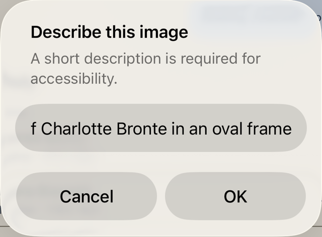
The third button has a chain link on it. It is for a picture that is already in this tree, so you can use it again on a second person. A list named Link existing media opens, with a box to search the pictures by what they show. A new tree has none yet. Choose Close to leave it. Choose a picture to add it to the page. It shows under the buttons at once.
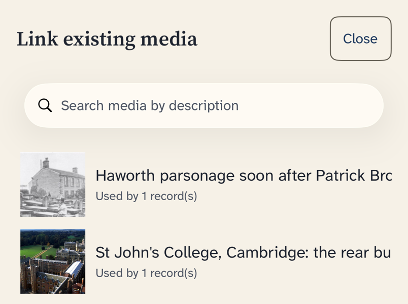
When a page already has pictures, a fourth button shows, with an arrow that points down. It copies all the pictures of that page to a folder. Your iPhone opens its own screen for choosing a folder. To leave it without copying, choose the back arrow at the top, then the cross.
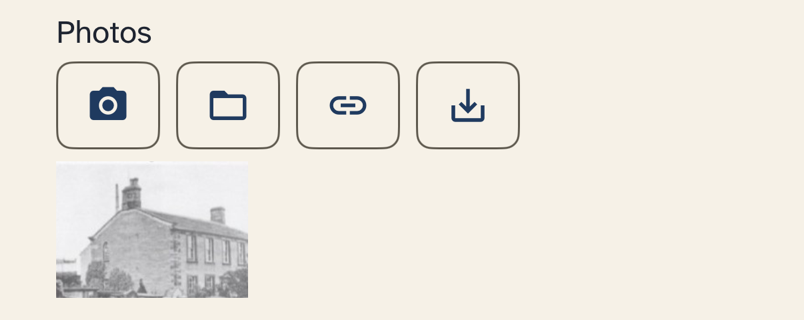
A tree from another program can point to a picture on a website. Pictures from a website says what that website sees, and where the picture is kept.
A tree can point to a picture on a website, and uFTi asks that website for it.
A tree from another program can point to a picture on a website, rather than hold it. To show the picture, uFTi asks that website for it.
The website sees your device's internet address and which picture was asked for. It also sees that uFTi asked, and which version. Nothing else about you is sent. Nobody who makes uFTi sees the request.
uFTi keeps the picture on your device, in a folder of its own. After that, it shows even when your device is not online.
The picture is not kept with your tree. So a copy of your tree does not carry it, even in a folder that syncs. Who can see your tree says more about copies.
If the website does not send the picture, a frame shows in its place. It says that the picture is missing, and why. Choose the frame to try again.
Pick a colour theme, and a light or dark look, for this iPhone.
These settings are for the app on this iPhone only. They do not change your family tree files.
The change shows at once. The app keeps your choice the next time you open it.
Below the two groups, Saving another program's file has two boxes to tick. They apply when you change a file that another program made. One keeps a backup before the first save of each session. The other keeps transcriptions in a folder beside the file.
Open the guide to the screen you are on, and read which version of the app you have.
The button with a question mark at the top of a screen opens the guide to that screen in your web browser. Its full name is Help about this screen
. Help at the end of the More list does the same.
Many boxes on a form also have a small round button with a question mark. It explains that box.
The version is the number of your copy of uFTi. Give it when you ask someone about a problem, so they know which copy you have.
You have the version to quote.
Next: The screens of the app shows what the other places do.
What to do when Family tree asks you to pick a person first, or Person, Events and Notes show only the search box.
You choose Family tree and the page says Select a person to view their family tree.
Or you choose Person, Events or Notes and the page is empty under the search box.
These pages show one person at a time. You have not opened anyone since the app started. There is no chip that starts with Showing at the top.
The page is empty because nothing has been added to the tree yet. Where records are kept, Who made this tree and Research questions and notes start empty.
What your workspace holds, why a GEDZIP file is the one to keep and send, and when a plain family tree file is better.
Your tree is more than one file. It is the family tree, its research notes, and the pictures and other files you attach. This chapter says what uFTi does with a file you open, how to keep a copy safe, and which file to send.
The short answer is the GEDZIP file. It holds your whole workspace in one file. Keep your work in a GEDZIP file, and send a GEDZIP file to anyone who also uses uFTi.
A plain family tree file is for older programs only. It leaves out your pictures and other attached files.
Your tree may have started in another program. Your family may want a copy. This chapter is for both.
Open another of your trees, and see which one is in use now.
You can keep more than one tree. Each one is a workspace, and each has a card on Workspaces. Only one tree is in use at a time.
Everything you see now is from the tree you chose. Your changes to the other tree were saved as you made them, so nothing is lost when you move.
To see which file a tree is, choose Show details on its card. The button then reads Hide details.
Next: Where your trees are saved.
A workspace is your family tree and its linked files, and a GEDZIP file holds all of them in one file.
A workspace is one family tree and everything kept with it. That is the family tree file, with its research notes, and the pictures and other files you attach to people, facts and sources.
The family tree file does not hold your pictures. It links to them, and the pictures stay in files of their own. The same is true of other attached files.
So if you send only the family tree file, the other person gets the tree and its links, but not the pictures.
A GEDZIP file puts the family tree file and all the files linked to it into one file. You send one file, and nothing is left behind. Another person who uses uFTi opens it and sees your whole workspace.
For that reason, a GEDZIP file is the one to keep and the one to share between copies of uFTi.
A plain family tree file holds the people, families, facts, sources and research notes. It does not hold the pictures or other attached files.
When you save one, uFTi asks which version of GEDCOM to use. Choose GEDCOM 7, which was published in 2021 and is the one it recommends. Choose GEDCOM 5.5.1, which was published in 1999, only for an older program that cannot read GEDCOM 7.
A GEDZIP file holds a GEDCOM 7 family tree file, with the pictures and other attached files beside it.
| File | The tree and its research notes | Pictures and other attached files | Use it to |
|---|---|---|---|
| GEDZIP file | Yes | Yes | Keep your work, and share it with another copy of uFTi. |
| Plain family tree file | Yes | No | Share with another program that reads GEDCOM, or work with one. |
Your trees are kept inside uFTi on your iPhone, so save a copy as a file to keep one where you can find it.
Each workspace is one family tree file. uFTi saves your changes to that file as you go. A new tree is kept in a folder named workspaces, which belongs to uFTi. So is the copy that uFTi makes when you open a file.
Choose Show details on the card of a tree on Workspaces. It gives the name of the file, the folder, and the day it was last saved, such as My family tree.ged in workspaces
. The sample tree says in uFTi
.
The Files app does not show it.
To have a file of your tree that you can see, send or keep somewhere else, choose Save as… on its card. Keep it safe says how.
Removing uFTi removes the trees kept inside it. Before you remove it, save a copy of each tree you want to keep with Save as…, and put the copy somewhere else. A file you opened from elsewhere, such as Downloads, stays where it was.
The file you choose stays where it was, and uFTi works on its own copy. Opened files and copies says what happens to each.
Bring a tree from another program, or a copy from a relative, into uFTi.
A family tree file ends in .ged or .gdz. Put the file on your iPhone first, for example in the Files app, under On My iPhone. uFTi works on its own copy, so the file you choose stays as it was. Opened files and copies says more.
The cards are one under another. Choose a card to make that tree the open one. Choose Show details on a card to see which file it is.
Next: Keep it safe.
Take a tree off the Workspaces screen without deleting its file.
The file is still on your iPhone. Open it again with Add from file… at any time. If you remove your last tree, the screen says No workspace open
. Home and Workspaces then offer Open the sample tree, which brings back the Brontë sample.
uFTi works on its own copy of the file you choose, so the file you chose stays as it was.
When you choose a family tree file, uFTi gets a copy of it and keeps the copy as its own. When the file opens, uFTi says so in one line. It works on that copy, so the file you chose does not change.
The file you chose stays as it was, however much you add. That also means it does not show your new work.
The copy that uFTi works on is not a file you can pick up and send. To get your tree out, choose Save as… on the card for your tree. Then choose how to save it, and where to put the file. Choose the GEDZIP file, unless you need a plain family tree file for an older program.
The file you save is a saved copy. It stays as it was when you made it. Make a new one after you add a lot.
Send a GEDZIP copy that you saved. Which file to send says why.
Send a GEDZIP file to anyone who uses uFTi, and a plain family tree file only to an older program.
To share your tree with someone who uses uFTi, save a copy as a GEDZIP file with Save as…, and send that file. Keep it safe shows how to make one.
A GEDZIP file holds your whole workspace: the tree, its research notes, and the pictures and other attached files. It is one file, so you can send it from your phone or tablet. Nothing is left behind, so the other person sees what you see. Your workspace and its files says more.
Some older programs cannot read a GEDZIP file. For them, save a plain family tree file instead. It holds the people, families, facts, sources and research notes, but not the pictures or other attached files. If the other person needs the pictures, send them as well.
Do not send the file you chose when you opened your tree. uFTi did not change it, so it does not show your new work. The copy that uFTi works on is not a file you can send.
A saved copy stays as it was when you made it. Make a new one before you send, if you have added anything since.
Your tree is yours: you decide who gets a copy, and your iPhone keeps it safe.
Your tree is yours. uFTi does not send it anywhere. Nobody who makes uFTi can see it.
You decide what goes in your tree, where you keep it and who gets a copy. That makes you the data controller for the people in it. This includes any who are still alive.
Your iPhone can back up the files of apps to iCloud. Your trees go with them. iCloud keeps this copy under your own account.
To see whether it is on, open the Settings app. Choose your name, then iCloud, then iCloud Backup.
A computer can also back up your iPhone when you connect it. That copy is kept on the computer.
Your iPhone makes these copies, not uFTi. Nobody who makes uFTi can see them.
A copy that you save goes where you choose. Keep it safe shows how. If you save it in iCloud Drive, or in another folder that is kept in step with a service, that service keeps a copy too. It keeps it under your account.
uFTi does not encrypt your trees. They are ordinary files. What keeps them safe is your iPhone.
Your iPhone encrypts its files once it has a passcode. Keep a passcode on it.
If you give someone a copy of a tree, they can read all of it.
A tree can point to a picture on a website. Pictures from a website says what that website can see, and where the picture is kept.
Privacy policy says what the people who make uFTi collect, and what they do not.
How Oughtibridge Ltd treats personal data in the uFTi app and on this website, and what you can ask us.
This policy describes how uFTi and this website work on 17 November 2026. That is the second early test version of uFTi, called Alpha-2.
Oughtibridge Ltd is a company in the United Kingdom. It makes uFTi and this website. In this policy, "we" means Oughtibridge Ltd.
We decide how to use the personal data that this policy says we may hold. That makes us the data controller for it.
To contact us, use the issue form on our GitHub page. Anything that you write there is public. So do not put private details in it. Say that you want to talk to us in private about your data, and we will tell you how.
This website does not set cookies. It has no analytics, no advertising and no tracking scripts.
Every page loads only things that come from this site. Your browser is told to refuse anything else.
Search works inside your browser. What you type into it is not sent to us.
The company that hosts this site may keep ordinary records of requests. These can show the time, the page that was asked for and the internet address of the device. We do not add anything to the site to follow you from page to page.
The PDFs are plain documents. We do not add tracking to them.
Some links lead to other websites, such as GitHub. Those sites have their own privacy policies. If you write in a GitHub issue, what you write is public and GitHub holds it.
We do not collect personal data through the app. uFTi has no usage tracking and no analytics. It does not send crash reports to us.
We cannot see the family trees that people make with uFTi. We do not collect, receive or have access to what you record in it.
If you ask us for help, you may choose to send us a message or a file. We then have what you send. We use it only to help you.
Your phone, tablet or computer may send crash reports to the company that makes its system. Your settings on the device decide this. It is part of the device, not part of uFTi, and we do not control it.
A family tree can hold a picture that lives on a website. When it does, uFTi asks that website for the picture so that it can show it. That website can see the internet address of your device, and which picture was asked for, as any website that you visit can. The request also names the app and its version, as a browser names itself. It says nothing else about you. We do not see this. uFTi then keeps the picture on your device, in a folder of its own, so it does not ask again. It is not kept with your tree, so a copy of your tree does not carry it. If the website does not send it, the app says that the picture is missing. The app does not use the internet for anything else.
uFTi uses the camera only when you choose to take a photograph of a document. The picture stays on your device. We do not receive it.
A picture that you add to a tree is kept with that tree, on your device.
Your device, or a service that you use, may make its own copy of your trees. It makes the copy under your own account, with your settings. uFTi does not make these copies, and we cannot see them. You decide whether they are made.
To stop this, change the backup settings on your device, or save your trees somewhere else. The manual for your device says where those settings are.
Your trees are ordinary files, in formats that other programs can read. uFTi does not encrypt them.
What keeps them safe is your device. Keep a lock on it, such as a passcode, a PIN or a password. Keep its own encryption on too: on a PC, BitLocker or device encryption, and on a Mac, FileVault. An Android phone or tablet, an iPhone and an iPad encrypt their files once they have a lock.
If you give someone a copy of a tree, they can read all of it. So can anyone who can open the folder that you keep it in.
Your trees are files. They stay on your device until you delete them. We never receive them, so we cannot delete them for you.
You can take a tree off the list in uFTi. The file stays where it is. To delete a tree for good, delete its file.
If you remove uFTi from a PC, your trees stay in your Documents folder. If you remove it from a phone, a tablet or a Mac, the folder that belongs to the app goes too. On a phone, a tablet or a Mac, a tree that you opened from somewhere else is kept as a copy in that folder. The file that you opened is not changed.
A Mac gives you more control over its files. You can choose which of them to keep, to copy and to delete.
Keep a copy of a tree somewhere else before you delete it, if you may want it again.
uFTi helps you record facts about people. Some may be your relatives. Some may be alive. The name, dates and family ties of a person who is alive are personal data.
You decide what to record about people, and why. That makes you the data controller for it. You are responsible for it under data protection law. This includes what you record about people who are alive.
The law treats purely personal use differently from other use. If you share or publish a tree, take more care. The Information Commissioner's Office explains the rules.
We never receive your tree, so we cannot answer questions about it. If you are named in a tree that someone else made, ask the person who made it.
uFTi is offered through app stores, such as the Microsoft Store, Google Play and the Apple App Store. A store has its own privacy policy for what it holds about you.
The Microsoft Store passes some information to app publishers through a service called Partner Center. For uFTi, this can include:
Other stores may pass on information of the same kinds. This is set up by the store and your device, not by uFTi.
We send early test versions to people we invite through a store. We know the email addresses that we use to invite them.
We use this information to look after and improve uFTi. We also use it to answer reviews and support requests. We keep it only as long as we need it for that. We do not sell it. We do not use it to build profiles of people.
Under UK GDPR, you can ask us:
Which of these apply depends on the case. We hold very little, so we may hold nothing about you.
To ask, use the contact route in the section "Who we are".
You can also complain to the Information Commissioner's Office, the UK regulator. You can make a complaint on its website.
We last checked this policy on 17 November 2026. We change it when uFTi or this website changes.
The parts of uFTi for the iPhone and iPad that other people made, and the licence of each.
uFTi is made with parts that other people wrote. This page names the parts that are in uFTi for the iPhone and iPad. It gives the version and the licence of each. A licence says what you may do with a part.
The list is made from the build of uFTi that this manual describes.
Copyright Oughtibridge Ltd. All rights reserved.
These make the app run. They come with their own notices about the parts that they use.
| Part | Licence | Copyright | Notices |
|---|---|---|---|
| .NET runtime | MIT | Copyright .NET Foundation and Contributors | Notices of the parts that it uses |
| .NET for iOS and Mac Catalyst | MIT | Copyright .NET Foundation and Contributors | Notices of the parts that it uses |
| .NET MAUI | MIT | Copyright .NET Foundation and Contributors | Notices of the parts that it uses |
uFTi for the iPhone and iPad uses 32 libraries. Each name is a link to the page of the library.
Every one of them states this copyright: © Microsoft Corporation. All rights reserved.
These are the fonts that uFTi shows its words and symbols in.
| Font | Licence | Copyright |
|---|---|---|
| Atkinson Hyperlegible Next | OFL-1.1 | Copyright 2020-2024 The Atkinson Hyperlegible Next Project Authors |
| Source Serif 4 | OFL-1.1 | Copyright 2014-2023 Adobe, with Reserved Font Name 'Source' |
| Material Icons | Apache-2.0 | Copyright Google LLC |
Brontë family of Haworth (sample tree). Copyright 2026 Oughtibridge Ltd. It was researched for uFTi from published sources that it cites.
The pictures are not part of uFTi. The sample tree links to them on Wikimedia Commons.
| Picture | Licence and source |
|---|---|
| St John's College, Cambridge: the rear buildings | Public domain. The photographer released it. From Wikimedia Commons. |
| Haworth parsonage soon after Patrick Brontë's death, circa 1863 | Public domain. From Wikimedia Commons, where the licence is stated. |
| The parsonage in Haworth, now the Brontë Parsonage Museum | Public domain, as released by its uploader on English Wikipedia. From Wikimedia Commons. |
An older copy of your family tree file, which the app makes for you. It is made the first time the app saves after you start it.
The person who decides what is kept about people, and why. By law, they must look after it.
A year written with two numbers, such as 1731/32. In Britain, it marks a date from 1 January to 24 March, up to 1751.
To lock a file with a secret code. Then only someone with the key can read it.
Something you record about a person, such as a birth with its date and place.
A GEDCOM file that holds a whole family tree, with its people, families, facts, sources and research notes. It does not hold pictures or other attached files. You can open one, save one and send one.
The standard format for family tree files. Many family tree programs read it. GEDCOM 5.5.1 was published in 1999. It has been the common format for more than twenty years. GEDCOM 7, published in 2021, is the newer version. A version belongs to the standard, not to uFTi.
One file that holds a whole workspace. It has the family tree with its research notes, and the pictures and other files. It is the best way to save and send your work.
The calendar that you use today. Britain changed to it in September 1752.
The number that shows where a device is on the internet. It is also called an IP address.
An old way to count the days. Britain used it until 1752.
A family tree drawn for one person. It shows their parents above them, and their partners and children.
A copy of your tree that you save yourself, as a GEDZIP file (preferred) or a family tree file. It stays as it was when you made it.
Where you found a fact. It can be a certificate, a census page, a book, or what someone told you.
One family tree and everything kept with it. That is the family tree file with its research notes, and the pictures and other files you attach. A GEDZIP file holds all of it. You can have more than one.